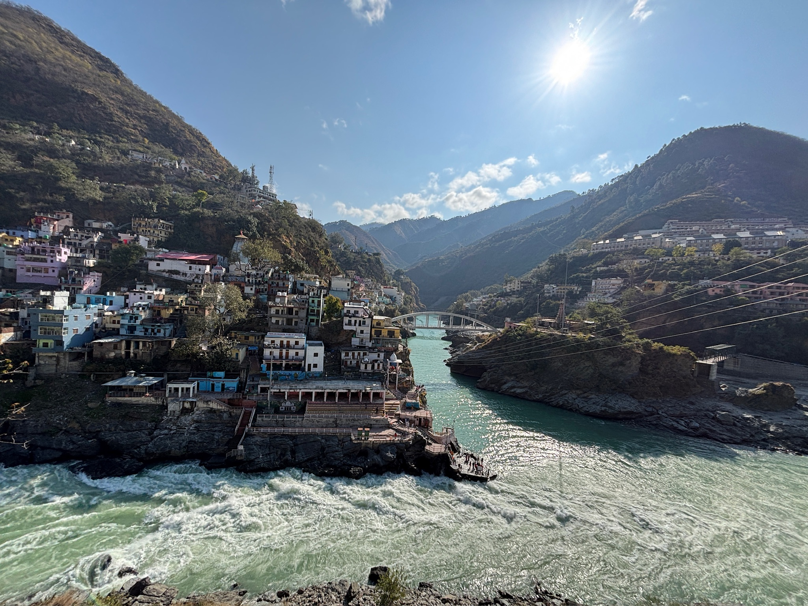
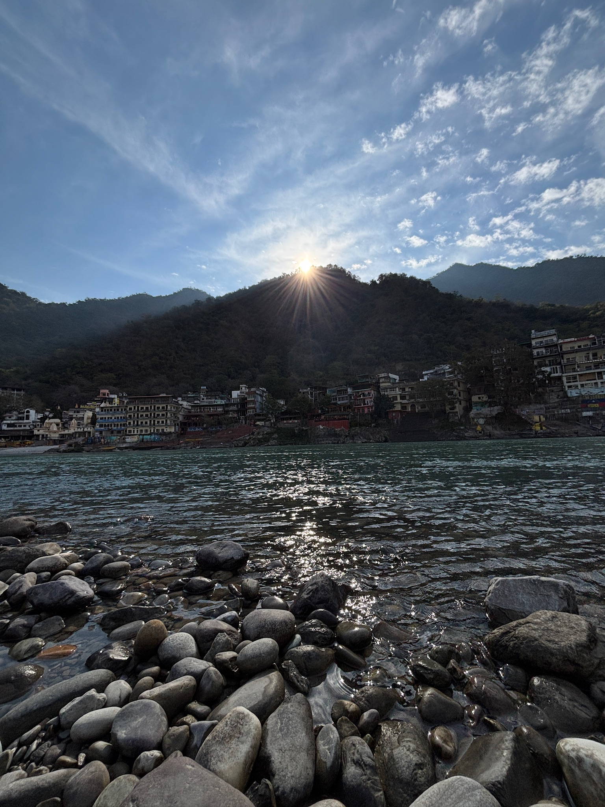
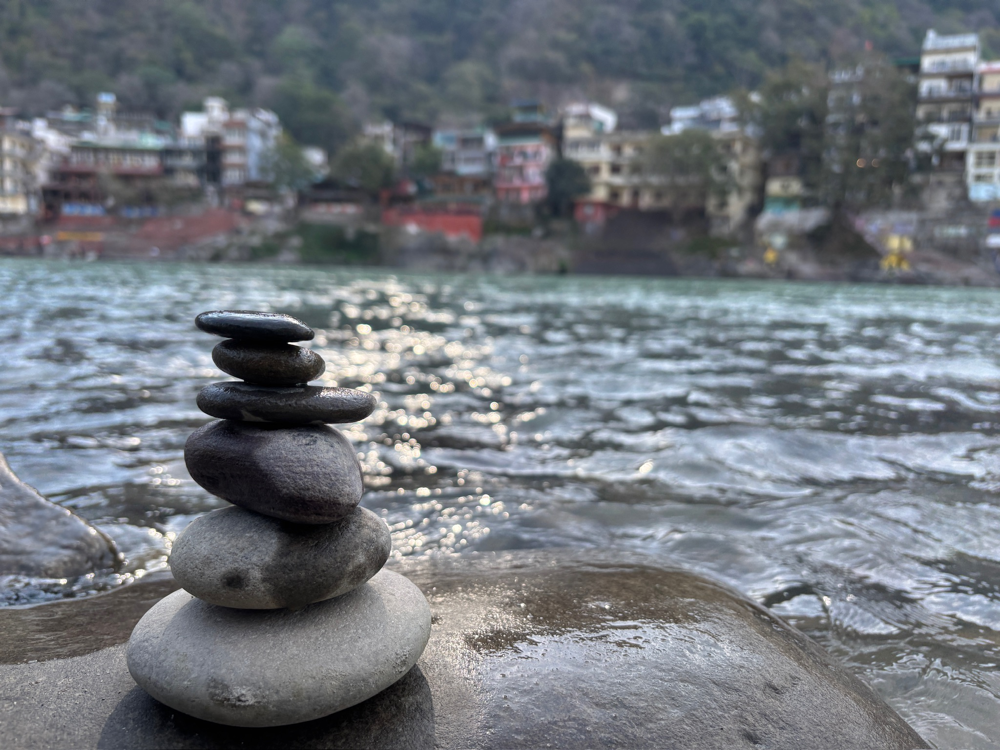
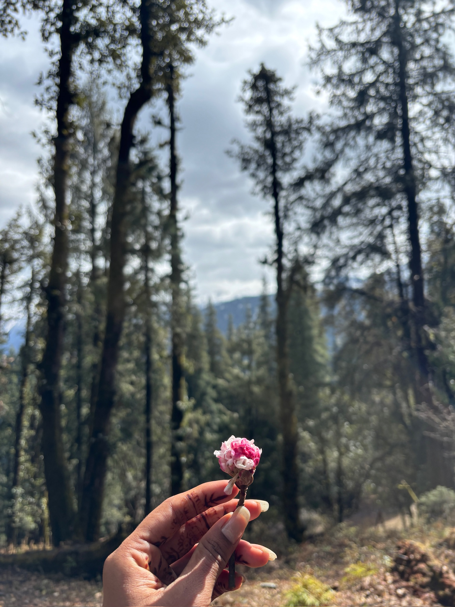
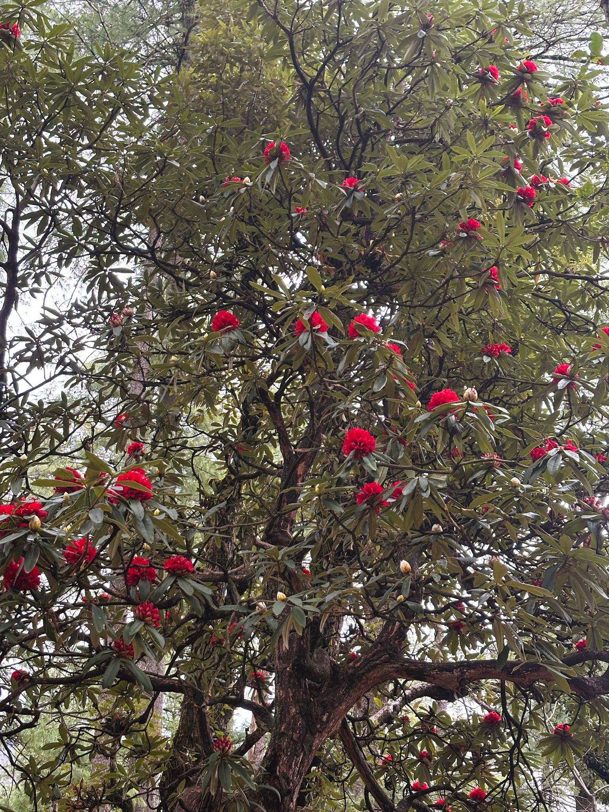
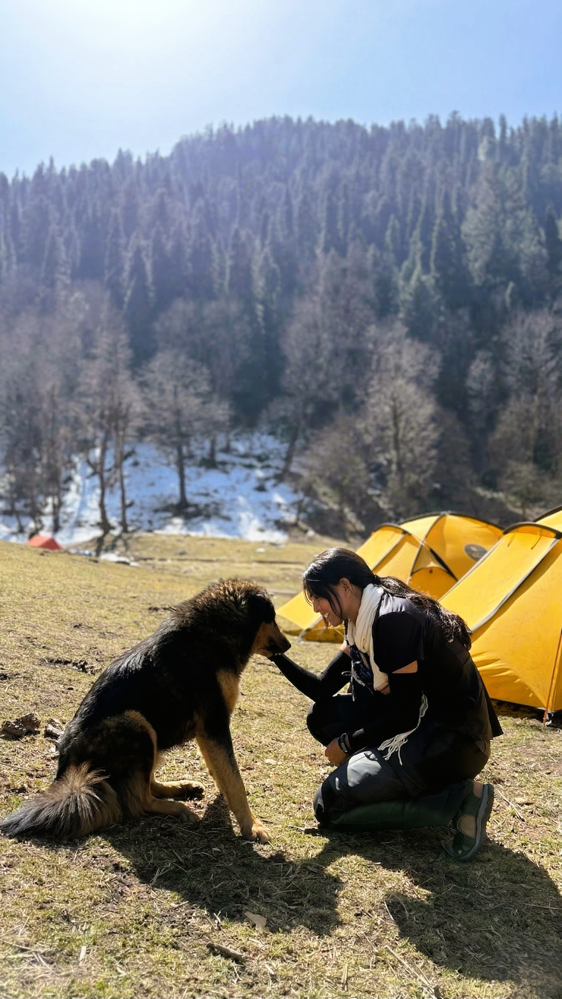
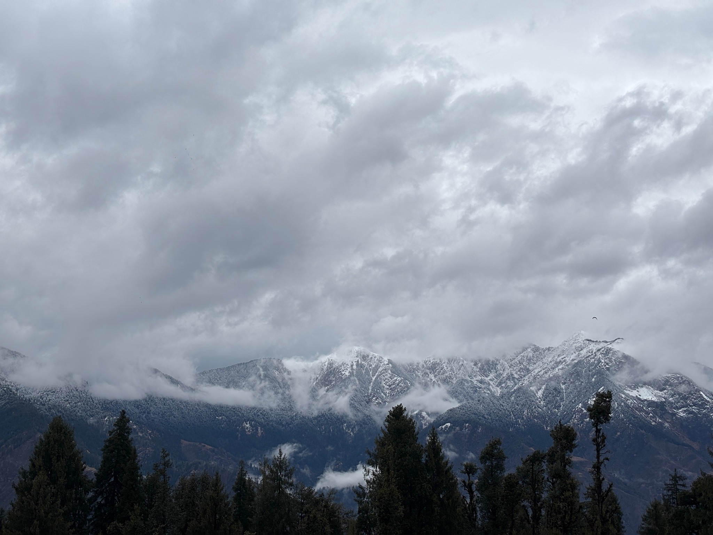
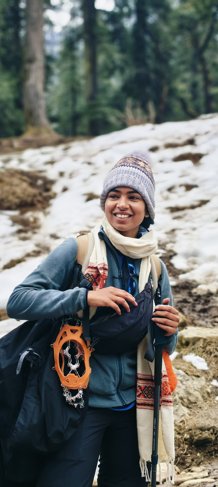
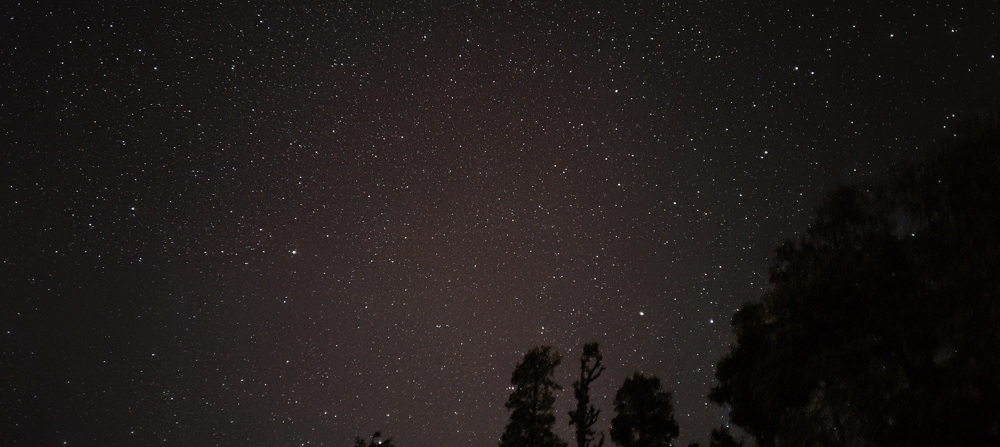
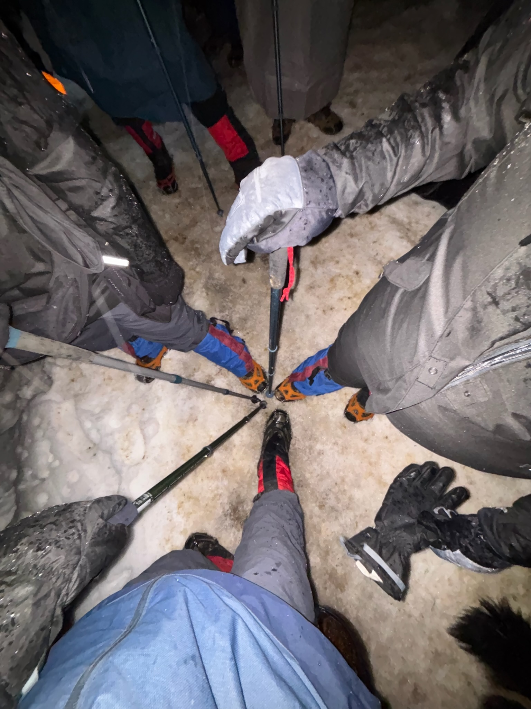

This was my first Himalayan trek my first snow, my first flight completely unexpected and unplanned. Nothing in my life had prepared me for it, and yet somehow, everything had. I arrived two days early, which gave me time to breathe, to slow down, and to let the mountains begin their quiet work on me.
Rishikesh welcomed me the way it welcomes everyone who comes with an open heart with the sound of the Ganga, the smell of incense, and the feeling that something in you is about to change. Watching the Ganga Aarti for the first time was nothing short of divine. The flames, the chanting, the river carrying it all forward I just stood there, completely still.


The next morning, I rented a bike and rode alone to the bungee jumping point — just me, the road, and the mountains watching. There's something about riding solo through Uttarakhand that strips you of every excuse you've ever given yourself.
Bungee jumping had been on my bucket list for years. I finally checked it off — jumping over the Ganga, the river roaring below me, the world momentarily upside down.
Some moments are too alive to photograph. Bungee jumping over the Ganga was one of them. When you fall like that — with everything below you and nothing holding you — you find out very quickly what you're made of.
Then, the journey to Kedarkantha began — filled with music, laughter, incredible places, and the most amazing people. The food was incredible, the roads were winding, and somewhere in the middle of it all, I stopped thinking and just started feeling.


We set off from Sankri base camp, trekking through rocky paths lined with vibrant red rhododendrons. Dancing on the mountain trails, enjoying every breath of crisp air, made the journey feel less like effort and more like celebration.
For the first time, I experienced 0-degree and minus temperatures. And in those conditions — shivering, fingers cold, breath fogging in the air — seeing those sunsets was something else entirely. The sky would turn amber and rose over the snow-capped peaks, and I remember thinking: this is why people come here. This is why they keep coming back.

My First Snow.
The Peace I Was Searching For.
As we made our way to Juda Ka Talab, I saw snow for the first time in my life. I want you to think about that for a second — the first time. There are some experiences that can only happen once, and this was mine.
The view of the mountains, the golden oak trees glowing in the sunset, fluffy dogs wandering around, the crisp mountain air, the peace of stargazing under a clear sky — it was magical. And the people I met made it even more fun, playing games and sharing stories. That night, I had my first experience sleeping in a sleeping bag. Freezing. Absolutely unforgettable.
I thought the food would be bland at high altitude, but every meal felt earned and tasted better for it. The dogs that wandered through camp were our protectors, our companions — one in particular was so beautiful, so fluffy, that if I could have, I would have packed it in my bag and brought it home.


Climbing the snowy trail, I tried to throw snow at my friends — and hilariously slipped and fell instead. I lost count of how many times I fell that day. Every single time, I laughed harder than the time before. There's something about falling in the snow that makes you feel like a child again.
And then — this dog. My trek buddy. The most beautiful, fluffy mountain dog, walking right beside me like we had known each other for years. It was so pretty that I genuinely stopped mid-trail just to take it in. If I had a chance, I would have packed it up and brought it home without a second thought.
The mountains were showing me things. The lake at Juda Ka Talab — the way it sat there, completely still, surrounded by snow and pine and silence — was simply breathtaking. I stood at the edge of it and felt, without any doubt, that I truly belonged there.



